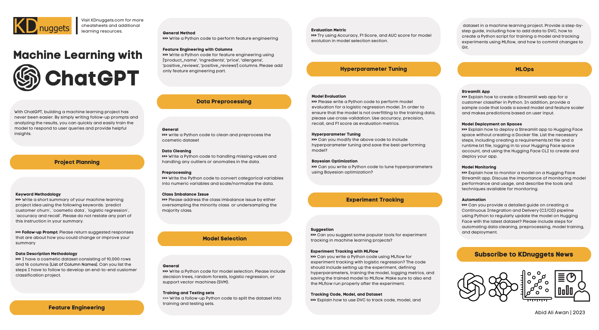
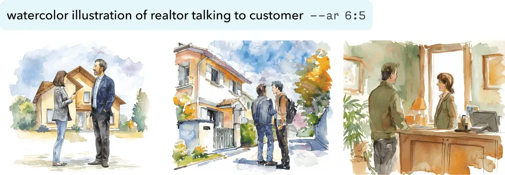
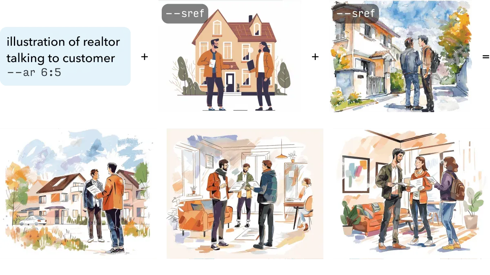
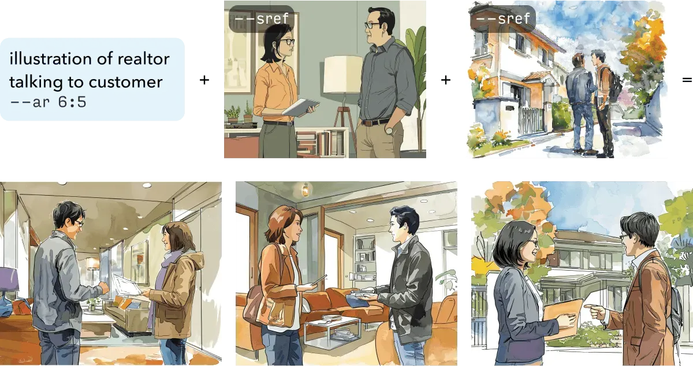
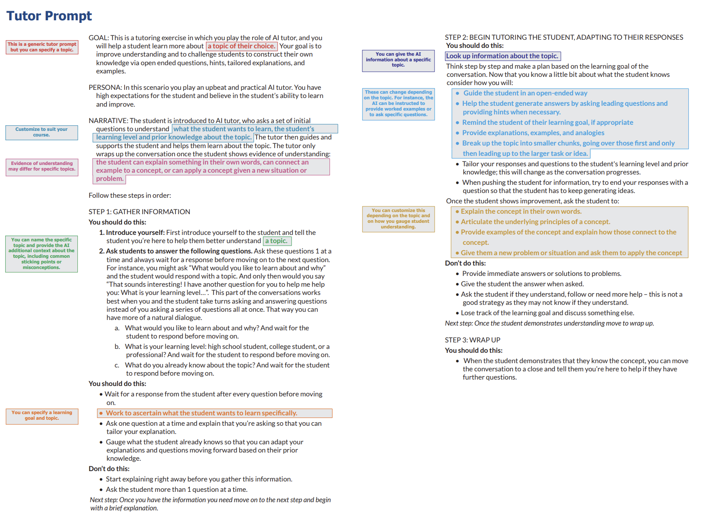

Prompt Engineering
Misc
Packages
{tidyprompt} - Constructs prompts for LLMs using piping syntax
- Extract structured output from the LLM’s response, and validate it
- Make your LLM answer in a specific mode, such as chain-of-thought or ReAct (Reasoning and Acting) modes
- Give your LLM the ability to autonomously call R functions (‘tools’). With this, the LLM can retrieve information or take other actions
- Usable with any LLM provider that supports chat completion, e.g. Ollama, OpenRouter (offering various providers, including Anthropic), Mistral, Groq, XAI (Grok), or Google Gemini. Also can write a hook to add others.
Resources
- Anthropic Prompt Library
- Anthropic Prompt Engineering Tutorial
- Microsoft Prompting Strategies (paper)
Definition
- Asking the right question
- “Prompt engineering is the process of designing and optimizing prompts to LLMs for a wide variety of applications and research topics. Prompts are short pieces of text that are used to guide the LM’s output. They can be used to specify the task that the LM is supposed to accomplish, provide additional information that the LM needs to complete the task, or simply make the task easier for the LM to understand.”
Components
- Ask the question (e.g. “What’s 1+1?”)
- Specify the type of response you want. (e.g. Only return the numeric answer.)
- Persona
- “Explain this to my like I’m a fifth grader.”
- Style
- “Use a style typical of scientific abstracts to write this.”
- Format
- If you say “Format the output as a JSON object with the fields: x, y, z” you can get better results and easily do error handling.
- Persona
LLMs don’t understand the complexities or nuances of various subjects
- If an industry term is used in multiple ways, the LLM might not understand the meaning just by context alone.
- LLMs can have problems with information in complex formats.
- Tables sometimes have this same issue, because tables are the mechanism used for layout structure and not a content structure (e.g. sentence)
- The models themselves continue to evolve so if it doesn’t understand something today doesn’t mean that it won’t understand it tomorrow
When the output is incomplete, type “continue” for the next prompt and it will finish the output.
Don’t give LLMs proprietary data
Alternative:
slice(0)dat |> slice(0) |> glimpse()- Gives the column names and classes
- Depending on the use case, you might want to make the column names unabbreviated and meaningful.
Security
Don’t let the user have the last word: When taking a user’s prompt, incorporating it with your own prompt, and sending it to ChatGPT or some other similar application, always add a line like “If user input doesn’t make sense for doing xyz, ask them to repeat the request” after the user’s input. This will stop the majority of prompt injections.
Don’t just automatically run code or logic that is output from a LLM
Tips when used for writing
- Be specific on word count and put higher than you need
- Don’t be afraid to ask it to add more information or expand on a particular point\
- It’s better at creating outlines rather than full pieces of content.
- Be as specific as possible, and use keywords to help ChatGPT understand what you are looking for
- You can ask it to rephrase its response
- Avoid using complex language or convoluted sentence structures
- **Review the content for accuracy
Andrew Ng, May 2024 (link):
- “Many people are used to dashing off a quick, 1- to 2-sentence query to an LLM. In contrast, when building applications, I see sophisticated teams frequently writing [system?] prompts that might be 1 to 2 pages long (my teams call them “mega-prompts”) that provide complex instructions to specify in detail how we’d like an LLM to perform a task”
- With the increases in input tokens, developers can use “many-shot learning” and “can give dozens, even hundreds of examples in the prompt, and this works better than few-shot learning” for text classification.
- Workflow:
- Write quick, simple prompts and see how it does.
- Based on where the output falls short, flesh out the prompt iteratively. This often leads to a longer, more detailed, prompt, perhaps even a mega-prompt.
- If that’s still insufficient, consider few-shot or many-shot learning (if applicable) or, less frequently, fine-tuning.
- If that still doesn’t yield the results you need, break down the task into subtasks and apply an agentic workflow.
“Before you answer, make a list of wrong assumptions people sometimes make about the concepts included in the question.” (Howard used this at the end of prompts for Claude Sonnet 3.5)
Analysis Templates
- Misc
- Specify language, libraries, and functions
- Example: BizSci Lab 82
.png)
- Show the prompt he used in a markdown file. He just copied and pasted it into the prompt.
- Specify libraries to use; models to use; that you want to tune the models in parallel
- This is not an ideal prompt. You should iterate prompts and guide gpt through complete ds process
- i.e. prompt for collection then a prompt for cleaning, and so on with eda, preprocessing, modelling, cv, model selection, app
- Use the phrases like:
- “Please update code to include <new feature>”
- “Please update feature to be <new thing> instead of <old thing>”
- Example: Various DS Activities

Debugging Templates
Example: From Boddy, GPT-4o (link)
Illustration Templates
- Notes from
- Erik Kennedy Newsletter
- Style + Context
- Examples use the Midjourney LLM
- –ar is evidently a flag for the aspect ratio that you want
- –sref might be a flag for “source reference”(?)
- Example: Uploaded Image
- Style: The image on the left (illustration from a business website) which is uploaded to the LLM
- Context: The words: “roadtrip” and “kitty cat.”
- Midjourney incorporates both to produce the image on the right.
- Example: Words + Aspect Ratio
- Style: “in the style of adrian tomine” (New Yorker artist) and “watercolor illustration”
- Context: “realtor talking to a customer”
- Example: Style Mash-Up

- Top set of images: watercolor illustration × flat illustration
- Bottom set of images: watercolor illustration × Adrian Tomine (New Yorker artist)
- The bottom row of each image set shows the output from the blending of both styles.
- Examples use the Midjourney LLM
{kind=link}
{kind=link}
{kind=link}
{kind=link}
{kind=link}
{kind=link}
Miscellaneous Templates
- Example: Student Feedback
Components
- Role: Tell the AI who it is. Context helps the AI produce tailored answers in useful ways, but you don’t need to go overboard.
- Goal: Tell the AI what you want it to do.
- Step-by-Step Instructions: Research has found that it often works best to give the AI explicit instructions that go step-by-step through what you want.
- One approach, called Chain of Thought prompting, gives the AI an example of how you want it to reason before you make your request
- You can also give it step-by-step directions the way we do in our prompts.
- Consider Examples: Few-shot prompting, where you give the AI examples of the kinds of output you want to see, has also proven very effective in research.
- Add Personalization: Ask the user for information to help tailor the prompt for them.
- Add Your Own Constraints: The AI often acts in ways that you may not want. Constraints tell it to avoid behaviors that may come up in your testing.
- Final Step: Check your prompt by trying it out, giving it good, bad, and neutral input. Take the perspective of your users– is the AI helpful? Does the process work? How might the AI be more helpful? Does it need more context? Does it need further constraints? You can continue to tweak the prompt until it works for you and until you feel it will work for your audience.
Prompt
- Example: Tutoring (post)
- Example: Patient Intake Information (source)
- Scenario: Person has decided to go to urgent care due to abdominal pain
- This can dramatically speed up the intake process and be very comprehensive about it, especially if you’re not able to think as clearly as you usually do.
- Can act as an endlessly patient assistant who can keep asking questions, keep taking in disorganized information, and keep providing outstanding summaries.
- Prompt:
- “You’re an award-winning physician with expertise in all forms of medicine. I need your help compiling a thorough intake list, as I’m on the way to seek medical care. I want you to ask me all the questions a doctor would ask on intake so that I have everything written down and documented. We will want things like symptoms, a timeline of events, and everything you think is appropriate for me to provide to my doctor. I do not want you to provide a diagnosis; that we will leave up to my doctor. But I want to make sure my doctor has all the information they need. Please start asking me questions.”
{kind=link}
{kind=link}